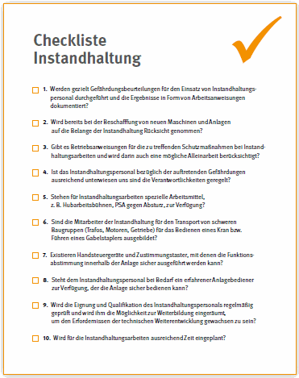
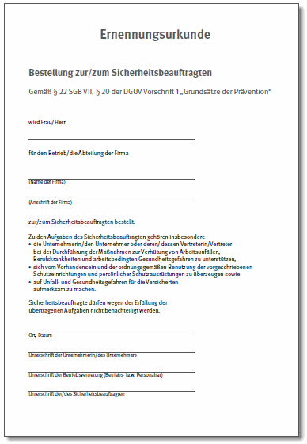
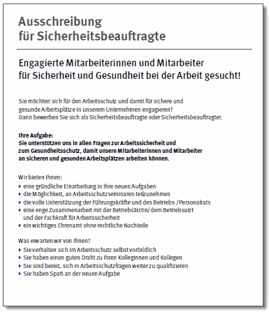
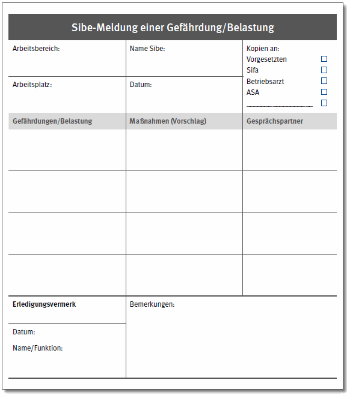

Praxis-Check
In vielen Betrieben haben sich betriebliche Meldebögen für Sicherheitsbeauftragte etabliert. Ist dies nicht der Fall, kann auch ein Muster verwendet werden, das von der DGUV angeboten wird (siehe Abbildung 20).
Neben den Betriebsärztinnen und Betriebsärzten, den Fachkräften für Arbeitssicherheit, die abhängig von der Betriebsstruktur und -größe interne oder externe Ansprechpersonen sind, stehen den Sicherheitsbeauftragten auch die Ansprechpersonen ihrer Unfallkasse, ihrer Berufsgenossenschaft oder die in den Bundesländern zuständigen, staatlichen Stellen (Gewerbeaufsicht, staatliche Ämter für Arbeitsschutz) für Fragen zur Verfügung. Meistens bieten die Präventionsdienste der Unfallkassen und Berufsgenossenschaften jeweils telefonische Beratung und Beratung vor Ort an. Zumindest die vor-Ort-Beratung sollte im Regelfall in Abstimmung mit der Führungskraft und/oder der Fachkraft für Arbeitssicherheit oder mit der Betriebsärztin/dem Betriebsarzt erfolgen.
Die Kontaktdaten der jeweiligen Unfallkasse oder Berufsgenossenschaft sind über www.dguv.de Webcode d80 abrufbar.
Selbst dann, wenn Sie bereits einen Lehrgang Ihres Unfallversicherungsträgers besucht haben, werden Sie während Ihrer Tätigkeit als Sicherheitsbeauftragter regelmäßig auf Fachwissen, den Arbeitsschutz betreffend, zugreifen wollen.
Zum Einstieg in ein Thema sollten Sie kurze Informationen wie die „Bausteine der BG der Bauwirtschaft“, „Arbeitsschutz Kompakt“ der Berufsgenossenschaft Holz und Metall oder das Minilexikon der VBG wählen, wenn Sie sich lediglich über die wichtigsten Aspekte in Bezug auf bestimmte Begrifflichkeiten, Maschinen, Anlagen oder Tätigkeiten informieren wollen.as Minilexikon der VBG als APP
Abb. 16: Das Minilexikon der VBG als APP

Abb. 17: Beispiel einer Checkliste für Instandhaltungsarbeiten (BGHM) Download www.bghm.de Webcode:219ChecklisteInstandhaltung
Weiterführende Links zu speziellen Fragestellungen für Sicherheitsbeauftragte sind auf der Seite www.dguv.de Webcode d657252 abgelegt.
Speziellere Aspekte zum Thema Arbeitsschutz enthalten die DGUV Vorschriften und Regeln für Sicherheit und Gesundheit bei der Arbeit, die DGUV Informationen und Grundsätze und andere Schriften. Diese Schriften finden Sie im Allgemeinen frei zugänglich im Internet, viele davon können aber auch von den Unfallkassen oder Berufsgenossenschaften als Papierversion bezogen werden.
Die Internetauftritte und Mitteilungsblätter der Unfallkassen und Berufsgenossenschaften behandeln außerdem aktuelle und wichtige Fragen des Arbeitsschutzes. Über die Internetauftritte der Unfallversicherungsträger sind ergänzend Filme, Checklisten, Formulare und weiter Downloadangebote erhältlich.
Mit dem Internetauftritt „Komnet“ (www.komnet.nrw.de) bietet das Landesinstitut für Arbeitsgestaltung des Landes Nordrhein-Westfalen eine umfangreiche Wissensdatenbank mit Antworten auf häufig gestellte Fragen im Arbeitsschutz.

Abb. 18: Beispiel für eine Ernennungsurkunde für Sicherheitsbeauftragte Download www.dguv.de Webcode: d1045958

Abb. 19: Beispiel für eine Ausschreibung für Sicherheitsbeauftragte
Download www.dguv.de Webcode: d1045958
Checklisten bieten den Sicherheitsbeauftragten eine weitere einfache Möglichkeit einen Einstieg in ein Thema zu finden und dabei die wichtigsten Aspekte zu behandeln. Viele Unfallkassen und Berufsgenossenschaften bieten themenspezifische Checklisten an. Darüber hinaus gibt es spezielle Checklisten für Sicherheitsbeauftragte.
Beispiele für derartige Checklisten der Unfallversicherungsträger sind:
Für Sicherheitsbeauftragte gibt es einige typische Formulare, die nach einer Anpassung an betriebliche Gegebenheiten in der Praxis gut einsetzbar sind.
Die Benennung der Sicherheitsbeauftragten erfolgt auf sehr vielfältigen Wegen. In den unterschiedlichen Branchen reicht es von der formlosen Aufnahme in Namenslisten bis zur Ernennungsurkunde für jeden Sicherheitsbeauftragten. In Abbildung 18 ist eine entsprechende Ernennungsurkunde beispielhaft aufgeführt.
In vielen Unternehmen wird die Position des Sicherheitsbeauftragten zusätzlich ausgeschrieben. Ein Beispieltext für eine Ausschreibung ist in Abbildung 19 abgebildet.
Die Benennung kann von den Sicherheitsbeauftragten als Auszeichnung angesehen werden. Schließlich wird man nur geeignete Mitarbeiterinnen und Mitarbeiter mit einer zusätzlichen Aufgabe dieser Art betrauen. Die Bestellung des Sicherheitsbeauftragten hat unter Beteiligung des Betriebs- oder Personalrates zu erfolgen (§ 22 SGB VII).

Abb. 20: Beispiel einer Sibe-Meldung für Gefährdungen oder Belastungen
Stellen Sicherheitsbeauftragte fest, dass eine Einrichtung im Betrieb nicht dem notwendigen Arbeitsschutzniveau entspricht oder eine vorgeschriebene Schutzvorrichtung fehlt oder Mängel aufweist, melden Sie dies ihren Vorgesetzten, am besten schriftlich. Es empfiehlt sich, dass Sie die Erfahrungen der Kolleginnen und Kollegen aus der betrieblichen Praxis an die Vorgesetzten herantragen, um diese für den Arbeitsschutz nutzbar zu machen. Darüber hinaus müssen die Mängel beseitigt werden und Ihre Aufgabe ist es, so lange daran zu erinnern, bis dies erfolgt ist.
Praxis-Check
|
|
In vielen Betrieben haben sich betriebliche Meldebögen für Sicherheitsbeauftragte etabliert. Ist dies nicht der Fall, kann auch ein Muster verwendet werden, das von der DGUV angeboten wird (siehe Abbildung 20). |